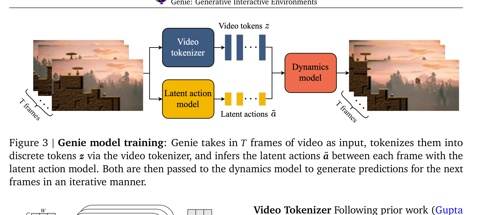

Genie: Generative Interactive Environments
Jake Bruce 等 · arXiv 技术报告 · 2024 · arXiv:2402.15391 · Zotero D8BNWY4D
Genie 从无动作标签的互联网游戏视频中同时学习视频 token、离散 latent action 与自回归 dynamics。推理时用户每一帧选择一个 latent action，模型继续生成下一帧，因此它比普通 text-to-video 更接近“可交互世界模型”。
§1 Introduction：普通视频生成为什么还不能称为可交互世界
文本到视频模型可以从一张图继续生成看似合理的未来，但用户通常只能在整个 clip 层面给 prompt，不能像玩游戏一样每一步改变角色行为。传统 world model 能逐步响应动作，却需要从游戏引擎或机器人控制器读取真实 action，互联网视频恰好没有这种标签。Genie 因而提出一个很尖锐的问题：只观察世界怎样变化，能否同时发现一组“按钮”并学习按下按钮后的下一帧？
展开原文 · 核心定位
“generative interactive environments trained from unlabelled Internet videos”
论文的贡献不是证明生成视频等于理解物理，而是把“视频级生成”推进到“帧级可控生成”：用户每一步选择离散 latent action，dynamics model 再生成下一帧。这个接口后来直接启发 LAPA 等工作把未标动作视频转成策略预训练信号。
§2 Related Work：Genie 把三条原本分开的路线接在一起
上一节提出无标签交互，但没有一个既有路线能单独完成它：视频 tokenizer 只压缩状态，world model 需要动作，视频生成模型又缺逐帧控制。Genie 的架构正是针对这三个缺口逐一配模块。
| Video generation | Phenaki、MaskGIT 等说明离散 token 与 masked prediction 能扩展视频生成，但通常由文本控制整段内容，缺少逐帧 action interface。 |
| Action-conditioned world model | Dreamer 等显式学习 $p(s_{t+1}\mid s_t,a_t)$，可用于规划或强化学习，但训练数据必须含真实动作。Genie 保留动作条件转移形式，却让动作由 LAM 从视频中发现。 |
| Unsupervised skill / latent action | 已有工作在游戏或策略学习中压缩动作，但常从真实 action 出发。Genie 的 LAM 直接比较过去帧与下一帧，用有限 VQ codebook 表达最能解释未来的变化。 |
| Memory-efficient video Transformer | 全时空 attention 随视频 token 数平方增长；Genie 使用空间与因果时间 attention 交替的 ST-transformer，让主导的空间计算随帧数近似线性扩展。 |
§3 Genie 新在哪里
| 传统 video model | 训练用 video + text，通常只在视频级控制内容 |
| 传统 world model | 训练用 video + ground-truth action，可逐步交互 |
| Genie | 训练只用 video，却通过 latent action 获得逐帧控制 |
动作编号由数据与训练共同涌现，不同模型/数据集的 id 不一定对应同一方向。可玩性来自同一模型内部的一致映射，而不是一个天然通用的动作本体。
§4 三组件联合成可交互生成器

1. 输入无动作标签视频
平台游戏互联网视频提供状态转移，但没有按键记录。
输入是什么：相机图像或视频，加上任务指令和机器人当前状态。它们还是原始观测，模型尚未把它们变成可用于预测或控制的特征。
这一步究竟做什么：本步骤执行“输入无动作标签视频”。具体来说，平台游戏互联网视频提供状态转移，但没有按键记录。 这个动作会真正改变环境，所以系统还要读取执行后的新观测，检查模型预期与现实之间的差距。
输出到哪里：经过本步骤处理、含义更明确的中间结果。这个结果会交给下一步“先学离散视频 token”继续处理。
为什么不能省略：它把未经处理的原始问题变成后续模块可以计算的输入，是整条链路的起点。
2. 先学离散视频 token
VQ tokenizer 压缩帧序列，使大 dynamics model 不必直接预测像素。
输入是什么：来自上一步“输入无动作标签视频”的产物：经过本步骤处理、含义更明确的中间结果。本步骤还会按论文设置读取当前条件、时间步或训练信号。
这一步究竟做什么：VQ tokenizer 压缩帧序列，使大 dynamics model 不必直接预测像素。
输出到哪里：一组比原始输入更紧凑的内部特征；它不是最终动作或画面。这个结果会交给下一步“LAM 发现有限按钮”继续处理。
为什么不能省略：模型不能高效地直接在所有原始像素和长序列上推理；这一步把信息压成后续模块能处理、比较和复用的形式。
3. LAM 发现有限按钮
用当前/未来帧重建约束，把变化压到小型离散 action codebook。
输入是什么：来自上一步“先学离散视频 token”的产物：一组比原始输入更紧凑的内部特征；它不是最终动作或画面。本步骤还会按论文设置读取当前条件、时间步或训练信号。
这一步究竟做什么：本步骤执行“LAM 发现有限按钮”。具体来说，用当前/未来帧重建约束，把变化压到小型离散 action codebook。 它把真实世界素材转换为既能渲染外观、又能与物理模块对齐的数字表示。
输出到哪里：经过本步骤处理、含义更明确的中间结果。这个结果会交给下一步“Dynamics 学受控下一帧”继续处理。
为什么不能省略：它承担上下两步之间的接口；缺少它，前一步产生的信息无法以正确格式或正确含义传到下一步。
4. Dynamics 学受控下一帧
交互时用户选 action id，模型迭代预测下一帧 token，再解码为画面。
输入是什么：来自上一步“LAM 发现有限按钮”的产物：经过本步骤处理、含义更明确的中间结果。本步骤还会按论文设置读取当前条件、时间步或训练信号。
这一步究竟做什么：本步骤执行“Dynamics 学受控下一帧”。具体来说，交互时用户选 action id，模型迭代预测下一帧 token，再解码为画面。 模型从相同起点产生候选未来，后续模块再检查这些未来是否符合条件、物理规律或动作需要。
输出到哪里：一组比原始输入更紧凑的内部特征；它不是最终动作或画面。这是图中这条链路的最终产物，随后会进入真实执行、模型更新或指标评测。
为什么不能省略：它把前面得到的内部结果落实为可执行动作、可训练模型或可解释指标，完成从方法到结果的最后一步。
§5 Latent Action Model：动作从哪里来
Tokenizer 只告诉模型“画面是什么”，仍没有可供用户操控的动作。LAM 因此同时看历史和下一帧，把导致未来变化的信息压进一个很小的离散码本；decoder 的重建任务是防止这些 code 变成无意义编号。
- $E(x_{1:t},x_{t+1})$
- 编码器通过比较过去与真实下一帧，提取最能解释这次状态变化的连续表示。
- $Q$
- VQ codebook 把连续表示压成有限 action id；主实验使用 8 个 code，使人类可以像学习新手柄一样探索其含义。
- $D(x_{1:t},\tilde a_{1:t})$
- 只根据历史和量化动作重建下一帧；若动作 code 不携带关键变化，decoder 就无法完成任务。
- 不可辨识性
- 公式只约束“解释未来”，不保证 code 等价于真实按键。角色运动、镜头变化和碰撞结果都可能进入同一 latent。
§6 Tokenizer 与 Dynamics：状态和转移分开学
§7 数据与规模
| Platformers | 从约 55M 个候选片段清洗到 6.8M 个 16 秒视频，约 30k 小时、10 FPS、160×90 分辨率。 |
| Dynamics model | 最终约 10.1B；加 tokenizer 与 action model，总规模约 11B。 |
| 输入 prompt | 游戏截图、合成图、照片、手绘草图等单/多帧视觉条件。 |
| 动作空间 | 无监督离散 latent；逐帧由用户选择，第一次交互时并不知道每个 id 的语义。 |
论文的 dynamics loss 随模型、数据和批量扩展而改善，但 loss 更低不自动等于长时可玩性或物理正确。自回归环境必须单独检查动作影响的一致性与多步漂移。
§8 实验、归因与复现边界
上一节说明 Genie 有足够规模生成多样场景；现在要问同一个 latent action 是否在不同状态下保持相对稳定的效果、模型是否能从分布外图像启动，以及长时间滚动时世界是否仍一致。视频质量只是必要条件，不能替代这些控制证据。
复现时最容易改变结论的变量
- 视频去重和片段过滤：重复关卡可能让 loss 很低却夸大泛化。
- codebook 大小：过大导致按钮难以探索，过小则合并本质不同的控制。
- mask ratio 与每帧 MaskGIT 迭代次数：直接改变画质、延迟和闭环可玩性。
- rollout 长度：只展示短片会掩盖身份漂移、碰撞错误和背景崩坏。
- 动作一致性评测：必须在多个起始状态下比较同一 code 的效果，而不是挑选单个成功样例。
§9 对 WAM 的意义
Genie 显式生成动作条件的下一帧/环境，因此是 latent-action world model；LAPA 则把同类 latent action 作为 VLA 代理标签，并在真实机器人动作上落地。两者一起构成“无动作视频 → 发现按钮 → 学转移/策略 → 少量真实动作对齐”的路线。
Genie 的离散游戏按钮、低频画面和自回归 MaskGIT 并不能直接处理连续高频接触控制；但它清晰验证了动作标签缺失时，仍可从视频中学习可交互 latent interface。